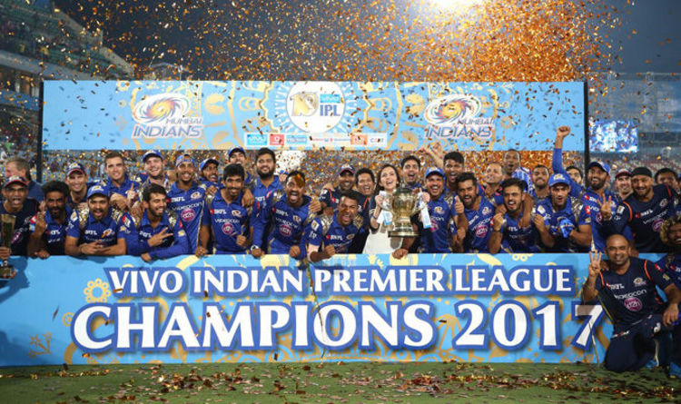

Mumbai Indians (MI) pulled off an incredible fightback to register a sensational win and lift the Indian Premier League (IPL) 2017 crown with an absolutely unbelievable one-run win over Rising Pune Supergiant (RPS) at the Rajiv Gandhi International Cricket Stadium in Hyderabad on Sunday. RPS were desperately unlucky when they lost skipper Steve Smith and Manoj Tiwary in the last over by Mitchell Johnson as they finished at 128/
MI had Krunal Pandya to thank for even being in the fight as he scored 47 precious runs in a poor batting display. Thereafter, the MI fast bowlers Johnson, Jasprit Bumrah and Lasith Malinga showed incredible control to wrest an improbable win to give MI their first win over RPS in IPL 10 and their third IPL title overall.
Smith finished with 51 and Ajinkya Rahane got 44. The rest of the batting couldn't get past Johnson (3/26), Bumrah (2/25) and Malinga.
Leg-spinner Karn Sharma ended with a fine spell of four overs for just 18 runs.
The slide began when RPS decided to send Mahendra Singh Dhoni ahead of the in-form Tiwary. Dhoni hasn't been in the best form of his life and while he tried to keep the run-rate going, he wasn't rapid enough.
Smith was left to try and accelerate the run-rate and things didn't get any better when Dhoni edged the impressive Bumrah to Parthiv Patel.
Earlier, the Mumbai innings got off to the worst possible start, with Jaydev Unadkat removing both Parthiv Patel and Lendl Simmons in double-quick time.MI just could not get off the ground thereafter with Smith running Ambati Rayudu out while none of the batsmen could really get after Washington Sundar of Shardul Thakur.
It wasn't till Krunal Pandya adopted long-handle tactics that MI got anything to bowl at, since none of the other batsmen really had an answer to the RPS plans.His 47 was just the thing that MI needed, though the sum total was still way less than what MI and Rohit Sharma would have hoped for.
